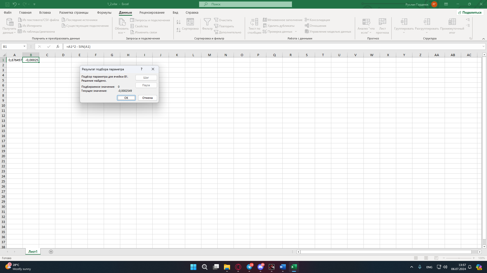

Завдання 1.2
Знайти за допомогою Scilab корінь рівняння чисельно і, якщо це можливо, аналітично. Виконати перевірку отриманого результату у MS Excel. Результати порівняти.
Варіант 7
Рівняння:
\[x^2 = sin{x}\]
Код написаний на Scilab
1_2.sce
function y = f(x)
y = x^2 - sin(x);
endfunction
function y = df(x)
y = 2*x - cos(x);
endfunction
function root = newton(x0)
tol = 1e-10;
max_iter = 100;
iter = 0;
x = x0;
while iter < max_iter
x_new = x - f(x)/df(x);
if abs(x_new - x) < tol then
break
end
x = x_new;
iter = iter + 1;
end
root = x;
endfunction
x0_1 = 0.5;
x0_2 = -0.5;
root1 = newton(x0_1);
root2 = newton(x0_2);
disp("Корінь поблизу 0.5: " + string(root1));
disp("Корінь поблизу -0.5: " + string(root2));
Результат роботи програми
Рисунок 1 - Результат роботи у Scilab
Результат роботи Excel:
Рисунок 2 - Excel таблиця
Висновок
При порівнянні результатів з Scilab та Excel, результати дуже схожі, хоч і мають невелеку похибку.